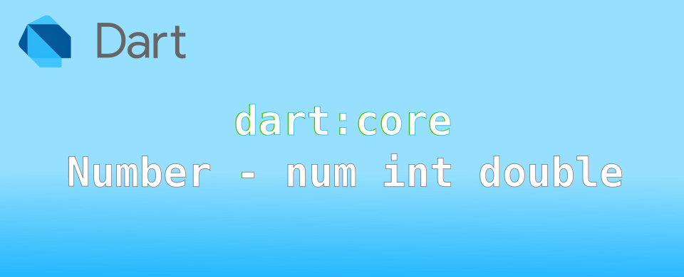

Dart: Number เบื้องต้นกับจำนวนตัวเลข

ใน Dart จะมีประเภทข้อมูลพื้นฐานเกี่ยวกับจำนวนตัวเลข โดยจะมี num class เป็น super class ที่จะสามารถใส่ค่าตัวเลขได้ทั้งเลขจำนวนเต็ม (int) และเลขทศนิยม (double) โดยช่วงค่าตัวเลขที่จะใส่ได้จะเป็นไปตามสถาปัตยกรรมของเครื่องคอมพิวเตอร์ที่นำไปทำงานด้วย
ในการใช้งานจริง หากผู้ใช้งานไม่ได้นำไปประมวลผลระดับบิต ก็ไม่จำเป็นต้องมาสนใจว่ามันจะเก็บเป็น int หรือ double เลย แต่ถ้าเมื่อไหร่สนใจสิ่งต่อไปนี้
- ความถูกต้องของเลขทศนิยม
- การปัดเศษ
- การแปลงจาก double เป็น int ตามฟังก์ชั่นการใช้งาน
หากมีสิ่งเหล่านี้ ก็ควรลงรายละเอียดเกี่ยวกับการทำงานมากขึ้น
num class
เป็น class ที่ใช้เก็บจำนวนตัวเลข ทั้งจำนวนเต็ม และเลขทศนิยม หากผู้ใช้ประกาศแบบระบุเจาะจงประเภท สามารถทำได้ดังนี้
num myNum = 0;
ตัว num class จะมีการจัดการตัวเลขจำนวนเต็มกับเลขทศนิยมไม่เหมือนกัน อยู่ที่ว่าข้อมูลที่เก็บเป็นข้อมูลแบบไหน ตัวอย่างเช่น
void main() {
num myNumber = 0.999999999;
print(myNumber);
myNumber = 100;
print(myNumber);
}
ผลที่ได้
0.999999999
100
แต่ถ้าเปลี่ยนจาก num เป็น double ผลที่ได้จะไม่เหมือนกัน
void main() {
double myNumber = 0.999999999;
print(myNumber);
myNumber = 100;
print(myNumber);
}
ผลที่ได้
0.999999999
100.0
โปรดสังเกตว่าตัวเลข 100 ที่เป็นจำนวนเต็มที่ใส่เข้าไปภายหลังถูกเปลี่ยนเป็น double 100.0
ใครที่เขียนโปรแกรมจัดการพวกจำนวนตัวเลข น่าจะเคยเจอปัญหาเกี่ยวกับเรื่องการเก็บตัวเลข และการประมวล ที่สุดท้ายมีจุดทศนิยม และได้ผลคลาดเคลื่อนไป ดังนั้นการทำความเข้าใจตรวงนี้น่าจะช่วยให้ลดปํญหาดังกล่าว
int เลขจำนวนเต็ม
ตัว Dart VM หากนำไปทำงานบนเครื่องที่ใช้ CPU แบบ 64-bit จะสามารถเก็บค่าตัวเลขได้ตั้งแต่ -2^53 ถึง 2^53 หรือ -9,007,199,254,740,992 ถึง 9,007,199,254,740,992 (เก็บได้ 16 หลัก) ซึ่งในปีที่เขียน 2024 อุปกรณ์ที่ใช้งานแบบ 32-bit แทบจะหาไม่ได้แล้ว
?! ในกรณีที่แปลง Dart เป็น javascript จะสามารถประมวลผลที่ระดับ 32-bit เท่านั้น
สามารถประกาศตัวแปรเพื่อเก็บเลขจำนวนเต็มได้ดังนี้
int intNumber = 0;
var intNumber = 0;
ในบางภาษา ผู้ใช้สามารถกำหนดค่าตัวเลขทศนิยมกับตัวแปรแบบจำนวนเต็มได้ แต่ใน Dart ไม่สามารถทำได้โดยตรง ผู้ใช้ต้องทำการ cast ด้วยตัวเอง บางคนมองไม่สะดวกแต่ปลอดภัยต่อการตรวจสอบการทำงาน
int intNumber = 0.5; // compile error
code ด้านบนจะขึ้น compile error → A value of type 'double' can't be assigned to a variable of type 'int'. Try changing the type of the variable, or casting the right-hand type to 'int'. ผู้ใช้จำเป็นต้อง cast ให้เป็น int ก่อน ดังนี้
void main() {
int intNumber = 0.5.toInt();
print(intNumber);
intNumber = 0.5.round();
print(intNumber);
}
ผลที่ได้
0
1
ผลที่ได้จะเห็นว่า toInt() คือตัดเศษทิ้งไปเลย ส่วน round() จะปัดขึ้นให้ การที่ผู้ใช้งานเป็นผู้กำหนดวิธีการแปลงค่าเองทุกจุด แม้จะดูยุ่งยากและน่ารำคาญแต่สำหรับผู้เขียนนั้นชอบมาก😍 ลำบากตอนนี้ดีกว่าไปนั่งปวดหัวตอนหา bugs ดังนั้น method ที่จะใช้ในการแปลงข้ามไปมาจึงสำคัญมาก ควรใช้งานให้ถูกต้อง
?! ถ้าต้องการเก็บข้อมูลตัวเลขที่อาจเป็นทั้งจำนวนเต็มและทศนิยม แนะนำว่าใช้ num จะดีกว่า ไม่มีปัญหาเรื่องการแปลงไปมาตอนเก็บข้อมูล แต่อาจมีปัญหาตอนใช้ข้อมูล เพราะไม่รู้ว่าข้างในเป็น int หรือ double จำเป็นต้องแปลงให้เหมาะสมก่อนนำไปใช้ประมวลและแสดงผล
เลขทศนิยม double
ใน Dart จะใช้การเก็บตัวเลขทศนิยมแบบ IEEE 754 ขนาด 64-bit ช่วงค่าที่เก็บได้คือ 2.2250738585072014e-308 ถึง 1.7976931348 623158e+308
รูปแบบการเขียนตัวเลข floating-point แบบ Scientific จะใช้รูปแบบ ±9.9999999e±999 เช่น
- 1.25e+5 จะมีค่าเท่ากับ 1.25 * 105 = 1.25 * 10,000 = 125,000.0
- 1.25e-5 จะมีค่าเท่ากับ 1.25 * 10-5 = 1.25 * 0.00001 = 0.0000125
- -1.25e+2 จะมีค่าเท่ากับ -1.25 * 102 = -1.25 * 100 = -125.0
- -1.25e-2 จะมีค่าเท่ากับ -1.25 * 10-2 = -1.25 * 0.01 = -0.0125

อธิบายวิธีเก็บค่าของตัว double (ไม่จำเป็นต้องรู้ก็ได้) จะแทน S คือ เครื่องหมายบวกลบ sign, E คือส่วนของตัวยกกำลัง exponent, F คือ เลขเศษส่วน fraction
- ถ้า E=2047 (111 1111 1111)2 และ F ≠ 0 ค่าที่ได้คือ NaN ("Not a number")
- ถ้า E=2047 (111 1111 1111)2 และ F = 0 และ S = 1 ค่าที่ได้คือ -Infinity
- ถ้า E=2047 (111 1111 1111)2 และ F = 0 และ S = 0 ค่าที่ได้คือ Infinity
- ถ้า 0<E<2047 ค่าที่ได้จะคำนวณจาก (-1)S * 2(E-1023) * (1.F) โดย (1.F) มีจุดมุ่งหมายเพื่อแสดงเลขฐานสองที่สร้างขึ้นโดยการเติม F ด้วยเลข 1 นำหน้าและตามด้วยเลข binary point
- ถ้า E = 0 และ F ≠ 0 ค่าที่ได้จะคำนวณจาก (-1)S * 2(-1022) * (0.F) เท่ากับ unnormalized values
- ถ้า E = 0 และ F = 0 และ S = 1 ค่าที่ได้ -0
- ถ้า E = 0 และ F = 0 และ S = 0 ค่าที่ได้ 0
สำหรับการใช้งานทั่วไป double คงไม่มีปัญหาอะไร นอกการวิธีการเก็บข้อมูลที่หากเกินความละเอียดที่ fraction จะเก็บได้ จะเกิดการปัดค่าให้สามารถเก็บได้
void main() {
double myFloat = 0.9999999999999999; // max digit can F store
print(myFloat);
double whatWrong = 0.99999999999999999; // more than F can store
print(whatWrong);
double maxFloat = 1.7976931348623158e+308; // max value that double can store
print(maxFloat);
print(maxFloat + 0.0000000000000001e+308); //Infinity
}
ผลที่ได้
0.9999999999999999
1.0
1.7976931348623157e+308
Infinity
การประมวผล บวก ลบ คูณ หาร และอื่น ๆ กับเลข double ผลที่ได้จะเป็น double โดยหากผลที่ได้ ความละเอียดของค่าตัวเลขมากกว่าค่าที่จะเก็บได้ จะมีการปัดค่าให้ใกล้เคียงกับผลลัพธ์มากที่สุด
จากตัวอย่างด้านล่าง แสดงให้เห็นว่า ผลที่ได้เกินกว่าจะเก็บในค่า fraction ได้จะถูกปัดเศษให้ใกล้เคียงกับผลลัพธ์มากที่สุด
void main() {
double numA = 17976931348623158.0;
double result = numA * 100.0;
print(result); //1797693134862315800.0
print(result + 1.0); //1797693134862315800.0
print(result + 100.0); //1797693134862315800.0
print(result + 200.0); //1797693134862316000.0 = 1.797693134862316e+18
}
ผลที่ได้
1797693134862315800.0
1797693134862315800.0
1797693134862315800.0
1797693134862316000.0
17976931348623158 คือเลขที่เก็บใน fraction ซึ่งจำนวนหลักเป็นค่าสูงสุดแล้ว เมื่อคูณด้วย 1000 จะกลายเป็น 1.7976931348623158e+18 เมื่อพยายามบวกค่าเข้าไป
- บวก 1 ปัดทิ้งเลย เพราะเกินกว่าค่า fraction จะเก็บได้
- บวก 100 ปัดทิ้งเลย เพราะเกินกว่าค่า fraction จะเก็บได้
- บวก 200 เก็บได้ 1797693134862316000.0 = 1.797693134862316e+18 ตัว fraction → 1 797 693 134 862 316 ลดลงจาก 17 หลัก เหลือ 16 หลัก
?! ถ้าเห็นตัวเลขแล้วมึน ก็จำหลักง่าย ๆ ว่า มันเก็บค่า fraction ได้ประมาณ 17 หลัก ค่าสูงสุดประมาณ 17,000 ล้านล้าน (ค่าคงที่ double.maxFinite) หากต้องการคำนวณค่าที่ต้องการความแม่นยำ ให้ส่วนเสริมที่รองรับการคำนวณพวก math เพิ่มเติม เพราะหากใช่ไม่ระวังจะได้ค่าที่ไม่ได้คาดหมายเอาไว้ และเกิด bug ในโปรแกรมได้
การแปลงค่าจาก double เป็น int
ในการแปลงค่าจาก int เป็น double ไม่ค่อยมีปัญหาอะไร ยกเว้นจะแปลงเลขจำนวนเต็มที่มีค่าเกิน 17 หลัก ส่วนที่เกินจะถูกปัดทิ้งเป็นค่าที่ใกล้เคียงที่สุด โดยส่วนที่ปัดทิ้งจะกลายเป็นเลข 0 ทั้งหมด ในโปรแกรมทั่วไปคงใช้ไม่เกิน 😅 แต่ในการแปลง double เป็น int จะมีประเด็นเรื่องเศษเลขทศนิยมว่าจะเอากับมันยังไงดี ปัดขึ้น ปัดลง ปัดทิ้ง หรือตั้งแต่ 0.5 ค่อยปัดขึ้น เลือกใช้ให้ถูกตามความต้องการ มาลองดูตัวอย่างกัน
การแปลงจาก double เป็น int จะมี 3 แบบ คือ ปัดขึ้นหรือลง ปัดเศษทิ้ง ปัดขึ้น
ปัดเศษขึ้นหรือลง round()
หลักการของ round() คือ ถ้ามีเศษตั้งแต่ 0.5 จะปัดขึ้น นอกนั้นปัดลง
void main() {
print(1.99999.round()); // → 2
print(1.5.round()); // → 2
print(1.49999.round()); // → 1
print(1.1.round()); // → 1
}
ปัดเศษทิ้ง toInt() truncate() floor()
ทั้ง 3 คำสั่งให้ผลเดียวกันคือ ปัดเศษทิ้ง ผู้เขียนเข้าใจว่าคนออกแบบเพื่อให้สะดวกต่อการเรียกใช้ เนื่องจากหากเคยใช้ภาษาอื่นมาก่อน ก็จะมีคำสั่งจำพวกนี้ ดังนั้นเลือกใช้ได้ตามสะดวก
void main() {
print(1.99999.toInt()); // → 1
print(1.5.toInt()); // → 1
print(1.49999.toInt()); // → 1
print(1.1.toInt()); // → 1
}
ถ้ามีเศษ จะปัดขึ้น ceil()
ถ้ามีค่าเศษจะปัดขึ้นหมด
void main() {
print(1.99999.ceil()); // → 2
print(1.5.ceil()); // → 2
print(1.1.ceil()); // → 2
print(1.00000000000001.ceil()); // → 2
print(1.0.ceil()); // → 1
}
การแปลงข้อความเป็นตัวเลข
จะมีคำสั่ง parse() และ tryParse() ที่เป็นแบบ static ใน num int และ double ดังนั้นหากต้องการแปลงค่าข้อความให้เป็นตัวเลขแบบไหนก็เลือกใช้แบบนั้น
parse()เป็นการแปลงข้อความเป็นตัวเลข หากแปลงไม่สำเร็จจะโยน FormatException กลับมาtryParse()เป็นการแปลงข้อความเป็นตัวเลขเหมือนกัน แต่หากแปลงไม่ได้จะคืนเป็นค่าnull
รูปแบบข้อความตัวเลขที่ยอมรับได้
หากใช้ num.parse ในการแปลงค่า จะได้ค่าคืนมาเป็น int หรือ double ตามรูปแบบของตัวเลขที่แปลง
void main() {
var value = num.parse('2021'); // 2021
print('${value.runtimeType}\t$value');
value = num.parse('3.14'); // 3.14
print('${value.runtimeType}\t$value');
value = num.parse(' 3.14 \xA0'); // 3.14
print('${value.runtimeType}\t$value');
value = num.parse('0.'); // 0.0
print('${value.runtimeType}\t$value');
value = num.parse('.0'); // 0.0
print('${value.runtimeType}\t$value');
value = num.parse('-1.e3'); // -1000.0
print('${value.runtimeType}\t$value');
value = num.parse('1234E+7'); // 12340000000.0
print('${value.runtimeType}\t$value');
value = num.parse('+.12e-9'); // 1.2e-10
print('${value.runtimeType}\t$value');
value = num.parse('-NaN'); // NaN
print('${value.runtimeType}\t$value');
value = num.parse('0xFF'); // 255
print('${value.runtimeType}\t$value');
value = num.parse(double.infinity.toString()); // Infinity
print('${value.runtimeType}\t$value');
}
ผลที่ได้
int 2021
double 3.14
double 3.14
double 0.0
double 0.0
double -1000.0
double 12340000000.0
double 1.2e-10
double NaN
int 255
double Infinity
ข้อควรระวัง อย่าเอา int.parse() ไปทำการแปลงข้อความที่เลขที่เป็น double ไม่งั้นจะเกิด Error
void main() {
print(num.parse('120.5'));
print(double.parse('120.5'));
print(int.parse('120.5')); // Error → FormatException: Invalid radix-10 number
}
แต่ถ้าเอา double.parse() ไปแปลงข้อความที่เลขจำนวนเต็ม สามารถแปลงได้ โดยผลออกมาจะเป็น double
แปลงเลขฐานอื่นนอกจากฐาน 10
ในกรณีที่ต้องการแปลงเลขฐานอื่น ที่ไม่ใช่ฐาน 10 ให้กำหนด radix เพิ่มเติม ใน int.parse()
void main() {
print(int.parse('1111', radix: 2)); // → 15
print(int.parse('F', radix: 16)); // → 15
print(int.parse('17', radix: 8)); // → 15
}
พอล่ะ เยอะ
เนื่องจากอยากเอาไว้แค่มาทวนความจำ มันเลยมีเรื่องที่ยังไม่ได้เขียนในนี้อีกหลายอย่าง
- การแปลง toString() เพื่อให้ได้รูปแบบตัวเลขที่ต้องการ ซึ่งมันจะมีแปลงหลายแบบอยู่ เช่น
.toStringAsPrecision(),.toStringAsExponential()ฯลฯ - พวก operator
+ - * / % ~/ > < == >= <=ส่วน bitwise operator ปกติแทบไม่เคยใช้เลย จะใช้ทีค่อยกลับมาดูทีดีกว่า
สามารถไปศึกษาเพิ่มเติมต่อได้ที่: